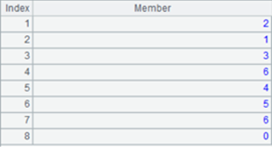
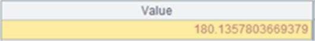

Description��
The external library function (See External Library Guide) removes outliers from a table sequence/record sequence numeric variable during modeling.
Syntax:
|
P.sert(cn) |
During modeling, remove outliers from numeric variable cn and return a binary sequence containing the handling result and removing process records Rec. |
|
P.sert@r(cn, Rec) |
During scoring, remove outliers from numeric variable cn according to removing process records Rec. |
Parameter:
|
P |
A table sequence/record sequence. |
|
cn |
A string/number, which is the name of column (or the column number starting from 1) – the to-be-pre-processed variable – in a table sequence or record sequence. |
|
Rec |
A sequence of removing process records. |
Option:
|
@c |
Outliers are removed from the original data after execution. |
Return value:
Sequence
Example:
|
|
A |
|
|
1 |
=T("D://house_prices_train.csv") |
Import training data. |
|
2 |
=T("D://house_prices_test.csv") |
Import scoring data. |
|
3 |
=A1.max(LotFrontage) |
The maximum value of the variable before outliers are removed. |
|
4 |
=A1.sert@c("LotFrontage") |
 Remove outliers from values of variable ��LotFrantage��: A2(1) Result of removing outliers; A2(2) Removing processing records Rec. |
|
5 |
=A1.max(LotFrontage) |
 The maximum value of the variable after outliers are removed. |
|
6 |
=A2.sert@r("LotFrontage",A4(2)) |
Remove outliers from values of corresponding variable in the scoring data according to A4��s removing process records. |